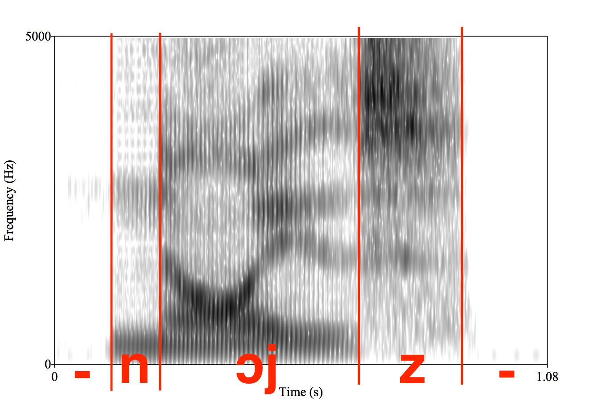

### A Small Apology --- # Troubles with Text Analysis and Units of Synthesis ### Will Styler - LIGN 168 --- ### Today's Plan - The two stages of TTS - Text Analysis is Hard - What units are we building from, anyways? --- ## The two stages of TTS --- ### We can think of TTS as (historically) having two parts - **Text Analysis:** "How should this chunk of text be pronounced?" - **Sound Synthesis:** "Let's turn that into an acoustic signal from playback" --- ### "PG&E will file schedules on April 20." - <img class="wide" src="comp/tts_phones.jpg"> - <img class="wide" src="comp/tts_wave.jpg"> - (Thanks to Julia Hirschberg for this annotated chunk) --- ### This actually varies a great deal between systems - Different approaches to TTS use different pipelines - Some may have multiple generation steps - Some may involve a pitch correction/prosody step after everything - Some modern neural models are end-to-end, and have just one step, effectively - "Take text, insert into transformer, receive waveform" --- ### It's a compelling metaphor - There is a set of problems which stem from figuring out how to pronounce a chunk of text - These are Text Analysis problems - There is a set of problems which stem from turning a fully annotated transcription into a waveform - These are Sound Synthesis Problems --- ### Sound Synthesis is hard - ... but we'll spend more time on how we do it and why in the next few days - For now, we're going to focus on the fact that... --- ## Text Analysis is Hard --- ### Text Analysis problems arise from unclear mappings - Mappings between text and sequences of sounds - /ɹʌf/ and "rough" - Mappings between symbols and sounds - "<3" and /lÊŒv/, "#cats" and /hæʃtæg kæts/ - "168" and /wÊŒn sɪkstijejt/ - Mappings between text and prosody - Where are there pauses? Pitch peaks? Falls? --- ### Every language will have different text analysis problems - Orthographies are more and less phonetically informative - Chinese to Tibetan to French to English to Russian to Spanish to Korean - Punctuation schemes are more or less useful in expressing prosody - *You'll need to re-do this step for every kind of text you input* --- ### I mean every kind! - omg r u fr u need 2 redo ths 4 evry dialect n orthogrphy?!111?! wtf - Some languages (e.g. Norwegian) have multiple standard orthographies - The same text analysis doesn't work for every dialect or situation - Although often, *any* speech from text is better than no speech from text --- ### So, Text Analysis is hard - Let's look at some examples --- ### Program Note - Many of today's slides feature Apple's old pre-neural TTS engine (the 'say' command), and a more recent (~2020) IBM text-to-speech system - This is not a 'fair' comparison for modern TTS, but still highlights real troubles - Remember that legacy systems are often the right choice for lower-resource languages or situations - So it's useful to know these pain points even when state-of-the-art isn't in so much pain! --- ### Detecting the end of sentences > It's difficult to even detect something like the end of a sentence. Although periods and exclamation and question marks provide good information, there are situations (e.g. the word e.g.) where periods can be used on their own. And we'll often end sentences by trailing off, blank lines, etc <audio controls src="comp/ttshard_endofsentence.m4a"></audio> --- ### Acronyms and Initialisms > Initialisms are read aloud as a series of letters, like the CIA, UCSD, NSA, and FYI. Acronyms are pronounced, like NASA, DARPA, FAFSA, or RAV4. And some have very specific pronunciations, like NAACP or AAA. Apple <audio controls src="comp/ttshard_acronyms.m4a"></audio> IBM <audio controls src="comp/ttshard_acronyms_ibm.wav"></audio> --- ### Numbers > Numbers are hard because we read numbers differently depending on their function. You're born in 1999, your pin number is 1999, you might have 1999 grains of rice in a cooker, but January 25 is 25 days after the 1. <audio controls src="comp/ttshard_numbers.m4a"></audio> --- ### Homographs are hard! - "We could lead in lead removal." - Noun vs. verb - "The wedding dress sewer fell into the sewer" - "The plumbing contractor is unionized." - "The acetic acid is unionized." --- ### The Lexicon - Preparedness across many domains - Medical, Legal, Military, International Places and Concepts - Miscellaneous Technical Jargon - Local street names - Code switching (switching between languages) --- ### Jargon > Adenocarcinoma in Tubovillious Adenoma bona fide certiorari de jure collusion RICO ex post facto CVN AWACS Escapement Tourbillion Remontoir de Egalite Apple <audio controls src="comp/ttshard_jargon.m4a"></audio> IBM <audio controls src="comp/ttshard_jargon_ibm.wav"></audio> ElevenLabs <audio controls src="comp/tts_will_jargon.mp3"></audio> --- ### Placenames > On my map is Lebon Drive, Gilman Drive, Miramar Road, Muir Lane, Caminito Santa Fe, Soledad Mountain Road, San Joaquin Drive, Arcadia Road, and I'm now in La Jolla and thinking of Moscow, Guangzhou and Darjeeling. Apple <audio controls src="comp/ttshard_streets.m4a"></audio> IBM <audio controls src="comp/ttshard_streets_ibm.wav"></audio> --- ### Codeswitching > Mañana me voy a Walmart to buy some calcetines y un poco del Chocolate that you really like Apple <audio controls src="comp/ttshard_codeswitching.m4a"></audio> --- ### Names are super hard - Spelling is arbitrary and variable - Names from around the world - 1.5 million names in 72 million households (1987 Donnelly list) - 20%+ of tokens in newswire --- ### Let's check some names <audio controls src="comp/ttshard_l6names.m4a"></audio> <!-- say "Farrell Ackerman, Eric Bakovic, David Barner, Leon Bergen, Gabriela Caballero, Emily Clem, Marc Garellek, Grant Goodall, Andy Kehler, Robert Kluender, Rachel Mayberry, John Moore, Sharon Rose, Will Styler, Eva Wittenberg, Michelle Yuan, Roger Levy" -o faculty.aiff --> --- ### Oof. - ... but this gets at a truth --- ### Language tasks that are hard for humans are often even harder for machines! - Humans are bad at names too - We know some subset of names common in our region - Spelling or pronounced variants still cause problems - "Alycia" - "Andres" vs. "Andries" --- ### Katelyn, Caitlin, Caitlyn, Kaetlin, Katelin, Katelynn, Kate Lynn, Caitlynn, Kaeytlynn <audio controls src="comp/ttshard_caitlyn.m4a"></audio> --- ### So, even understanding the sounds is hard - The writing system is awful - The proper pronunciation isn't always clear - Technical, Local, and field-specific jargon is everywhere - Place names are hard - Names are nearly impossible --- ### Prosody is hard, too! - Trying to go from text to the proper pitch, speech, intonation, and pauses is not straightforward - The 'rules' here tend to be difficult to describe, and often involve syntactic knowledge - This, too, is all language specific --- ### Emotional prosody - "Did you hear John's back in the hospital?" - "I'm really, really excited about the LIGN 6 final project!!" - "My wife decided she wants to go to a steakhouse tonight." - The risks of incorrect emotion are very high - Do we want to simulate this? --- ### Computers get judgemental about donuts --- <video controls src="video/donutquantity.mp4"></video> --- ### Meaning Differences from prosody - "I think I'll come tomorrow" - "Bill is coming if he's allowed" - "John should know that" - "I really like eating at Taco Bell. It is the peak of gourmet cuisine." --- ### Getting the timing right is hard <audio controls src="comp/alexa_nextappt.wav"></audio> --- ### There is a proper and improper speed for speech - This should be adjustable, but shouldn't need to be adjusted - Different people will choose different speeds - Different contexts require different speeds --- ### So, turns out it's really hard to figure out what to say - But eventually, we can arrive at a reasonable transcription - With prosodic annotations, so we know what to do with speed, pitch, and pauses - <img class="wide" src="comp/tts_phones.jpg"> --- ### Luckily, sound synthesis is really hard too! - ... but before we go there, we should answer a more basic question... --- ### What, exactly, are we synthesizing? --- ## Levels of Synthesis in TTS --- ### We have an analyzed text now - <img class="wide" src="comp/tts_phones.jpg"> - What do we do with it from here? - *Program Note: We're going to focus on legacy approaches here, as neural models make this part unclear!* --- ### We have many choices of unit to synthesize - Graphemes - Articulatory Gestures - Phones - Diphones/Triphones - Words - Utterances --- ### Grapheme-based Synthesis - "Let's go directly from letters to waveforms!" - This depends on the writing system being informative for phonetics - 🤣 - This is generally what's done with neural models now --- ### Articulatory Gesture Synthesis - "Let's figure out what's happening inside the vocal tract for each phoneme sequence, and model those movements acoustically!" - Reproduce sounds by reproducing speech gestures - "Virtual tongue" - Can be implemented in hardware or in software --- ### Hardware articulatory Synthesis <video controls src="video/motormouth.mp4"></video> --- ### Articulatory Synthesis: Pros - *Zero* speech recording required - Any voice is possible - Coarticulatory stuff comes for free --- ### Articulatory Synthesis: Cons - *Really* complicated to model - We barely understand humans enough to do this - Complex models needed for each word - ... or at least for each combination of phones - There are many things we don't model well yet - Robots could do fine with a single speaker --- ### Articulatory Synthesis isn't used outside research - Creating stimuli for perception experiments with careful control - For TTS, this would be *insane* --- ### We're now shifting into "concatenative" synthesis! - "Let's take existing chunks of speech and combine the files together" - This was the most common pre-neural TTS approach - We'll think more about the process next time! --- ### Phone(me)-based Concatenation - "Let's turn the text into a sequence of phonemes, and then build the waveform up from those phonemes!" - This often relies on having a dictionary of phoneme correspondences - See [CMUDict](http://www.speech.cs.cmu.edu/cgi-bin/cmudict) - You can also create a model which 'guesses' the right phoneme sequence for a written word - This is done *concatenatively* - Stitching one sound to the next to the next --- ### Phone(eme)-based Synthesis Pros - It's very versatile - As long as you have the relevant phones, models work for any language - Models tend to be smaller - If you're just generating ~50 sounds, you can do that cheaply - Then you need a dictionary, and a bit of logic for prosody and guessing new words - Adding new words is very cheap - Make a new dictionary entry, go home - Or guess! - Datasets can be small - Small amounts of data can contain all the phonemes --- ### Phone(eme)-based Synthesis Cons - It assumes all phonemes are the same - English and Spanish /d/ are very different - /k/ is different in 'key' and 'car' - Text analysis becomes much harder - Context effects, phone-level changes, etc - Word stress patterns need to be a part of your model - The training data needs phone-level segmentation - That's really expensive - Lots of concatenation points! --- ### Diphone/Triphone Synthesis - Instead of making words phone-by-phone, build them from chunks comprising the latter and first halves of adjacent sounds - So, we analyze the text as a sequence of diphones (e.g.) and then concatenate them --- ### Phones  --- ### Diphones <img src="phonmedia/noise_diphones.jpg"> --- ### Diphone/Triphone Synthesis Pros - Coarticulation comes for free! - The /k/s in 'car' and 'key' are different diphones - Many cues for (e.g.) place of articulation are found on the consonant boundaries - You're concatenating at the steadiest points, not the transitions - ... and triphones make for fewer concatenation points - These are still very small models! --- ### Diphone/Triphone Synthesis Cons - You need more data and get larger models - There are many more diphones than phones in a language - Your model needs to be able to create many more combinations - Text analysis is still hard - All the problems at the phone level (and in fact, it's basically the same task) - Failures are usually pretty understandable - "Oh, it said 'Caminito' badly, but I know what it meant --- ### Word-level Synthesis - "Let's record a large number of words, and then just stitch them together in the needed order!" - Text analysis involves identifying the words, choosing the correct homograph in context, and then figuring out the prosody which needs to be given to the word(s) - We start by recording a massive library of words - Then, we combine them in practice --- ### Word-level Synthesis Pros - Coarticulation within words is completely accounted for - We're concatenating in places where there's less information - Text analysis is closer to a lookup table! --- ### Word-level Synthesis Cons - You need a *massive* dataset - Every word you expect to say - Adding new items requires a new recording - It's very easy to seem 'disjoint' and disfluent - You need to force the words into the right pitch, duration, and prosody - You're only as good as your dictionary! --- ### Utterance-Level Concatenation - "Let's record multi-word chunks or even whole sentences and stick them together" - You're doing concatenative synthesis, just with larger chunks --- ### Utterance-Level Synthesis Pros - This can be flexible enough for many tasks! - Think weather reports, or Self-Checkouts - It bridges the gap between 'phrase playback' and full systems - Prosody and coarticulation and sentence-level effects are prerecorded - Recorded chunks are very natural - Text analysis is very boring - "Match chunk, grab chunk" - The model can be very boring --- ### Utterance-Level Synthesis Cons - It's easy for recordings to feel disjointed - You need to use the same voice actor - You need to ensure the prosody aligns well - You are limited to your dictionary of phrases - You can't go 'off script' without recording new chunks - Larger vocabularies of phrases require huge amounts of data - You might record "You have pressed" ten times for 0, 1, 2... - Scaling is not graceful --- ### So, we can choose many levels of processing - We can synthesize from Graphemes or Articulatory Gestures - We can concatenate Phones, Diphones, or Triphones - We can concatenate words together to form sentences - We can play back larger utterances, and concatenate whole chunks together --- ### ... Wait, hold up - Phoneme-level concatenation offers amazing flexibility, but disjointed sounding chunks - Word and Utterance concatenation offers smooth sounding chunks, with terrible flexibility - **Why not both?** - Good idea! That's what we'll cover next time! --- ### Wrapping Up - We can conceptualize TTS as involving Text Analysis and Sound Synthesis - Text Analysis is hard because written language is hard and speech is hard - We can make smart choices about what size chunks to synthesize or concatenate - ... and each choice has pros and cons! --- ### For next time - We'll talk about Unit Selection TTS, the most powerful legacy method! --- <huge>Thank you!</huge>